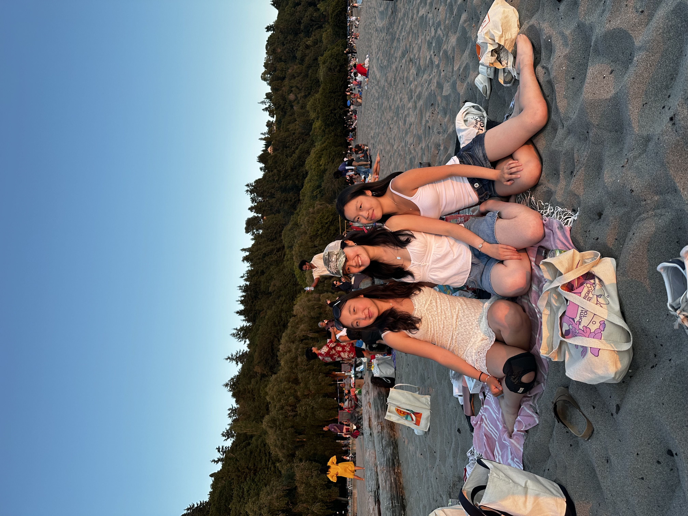
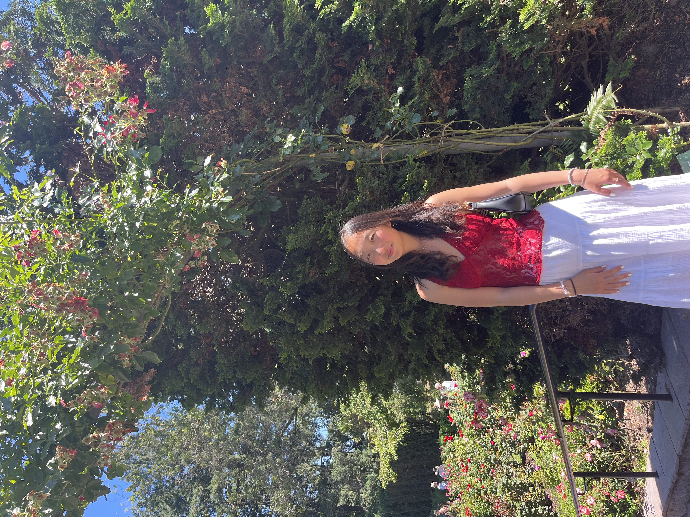
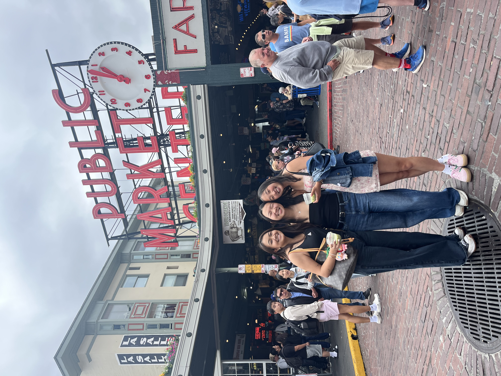
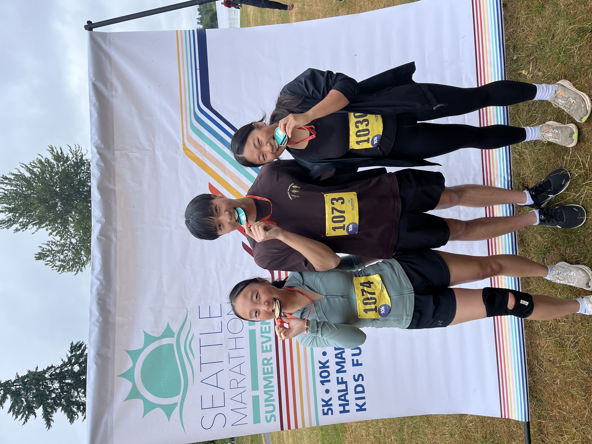
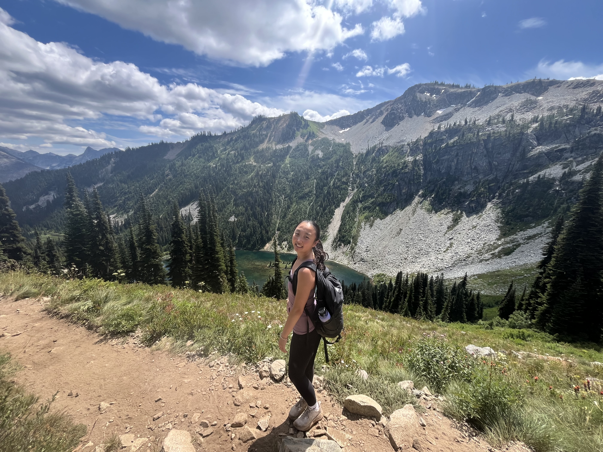
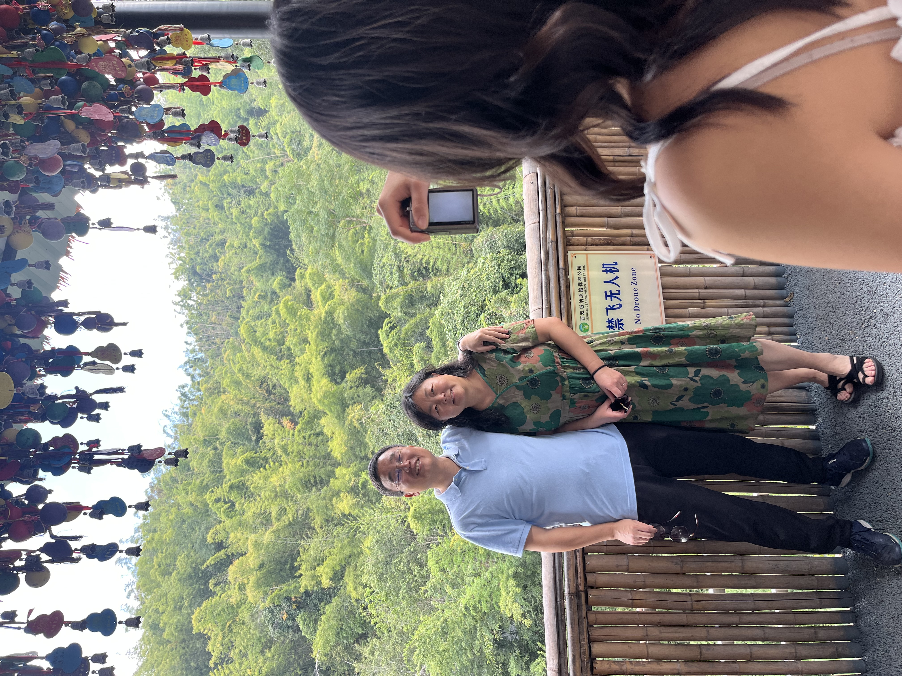

Hello! I'm Angelina, or Angie. :) I'm a third-year undergraduate student at Cornell University studying computer science and statistics, minoring in music. This past summer, I had the honor of working as a software engineer intern at Microsoft on the Bing, Microsoft Rewards team.
The summer prior, my time was spent conducting research under Professor Marten van Schjindel in the Cornell Computational Linguistics Lab, studying how different levels of linguistic information are compressed during summarization. Year-round, I'm a contributor to the Labor Dynamics Institute Replication lab under Professor Lars Vilhuber, assessing pre-publication materials and verifying reproducibility of research results.
On campus, I'm involved with Cornell AppDev -- an app development team catered for 8K+ individuals -- as an iOS developer and product manager for Score. I'm also a data contributor to Cornell's independent student newspaper The Cornell Daily Sun, and serve as secretary for the Beta Chi chapter of Alpha Omega Epsilon Professional Engineering Sorority.
Outside of any technical work, I'm an active violinist in the Cornell Symphony Orchestra, and currently study and take lessons under Dr. Ariana Kim.
Please feel free to reach out at asc337@cornell.edu, or schedule a chat with me through my Calendly. Always happy to chat! :)
Below is a small tidbit of my life. To learn more about my projects, research, or resume, please click on the respective links here, or at the navigation bar up top!
A short message of gratitude 🌷
A recent segment I watched about antifragility (the idea of putting pressure on a system, or human, the system or human actually grows bigger and stronger), explained by Tal Ben-Shahar, says that "the number one predictor of happiness is the quality time we spend with people we care about, and who care about us."






In lieu, I've put together a (quite messy) compilation of snippets of my life, and the people whom I call my family and friends. While this is only vaguely representative of my life as a whole, I'm forever grateful to have these wonderful human beings by my side along for the janky, yet beautiful ride of "life".